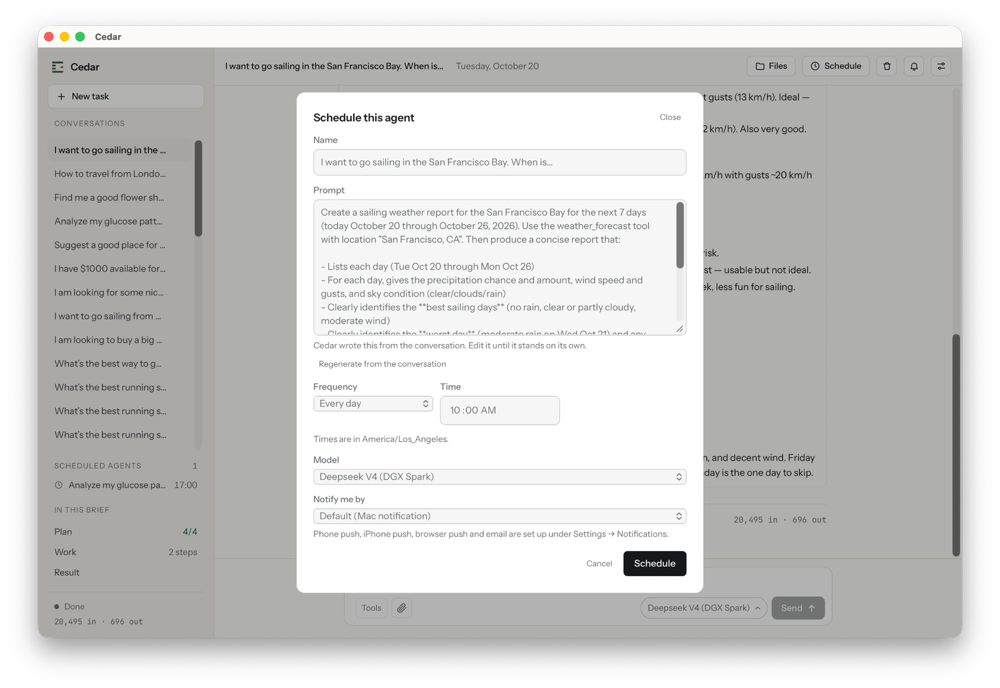
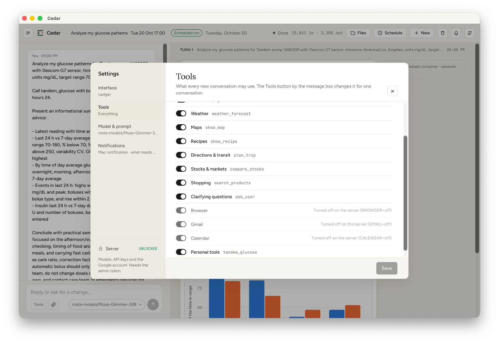
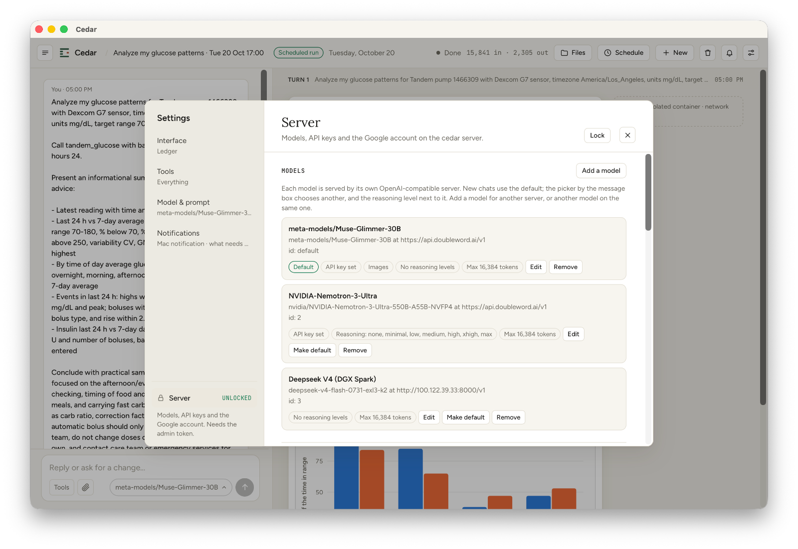
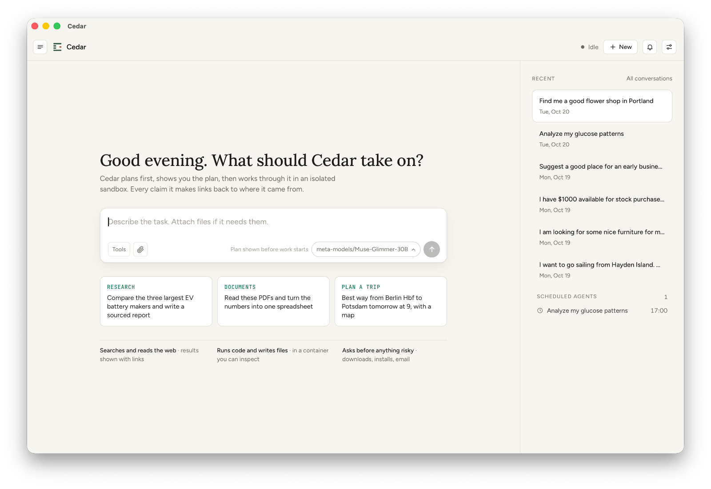
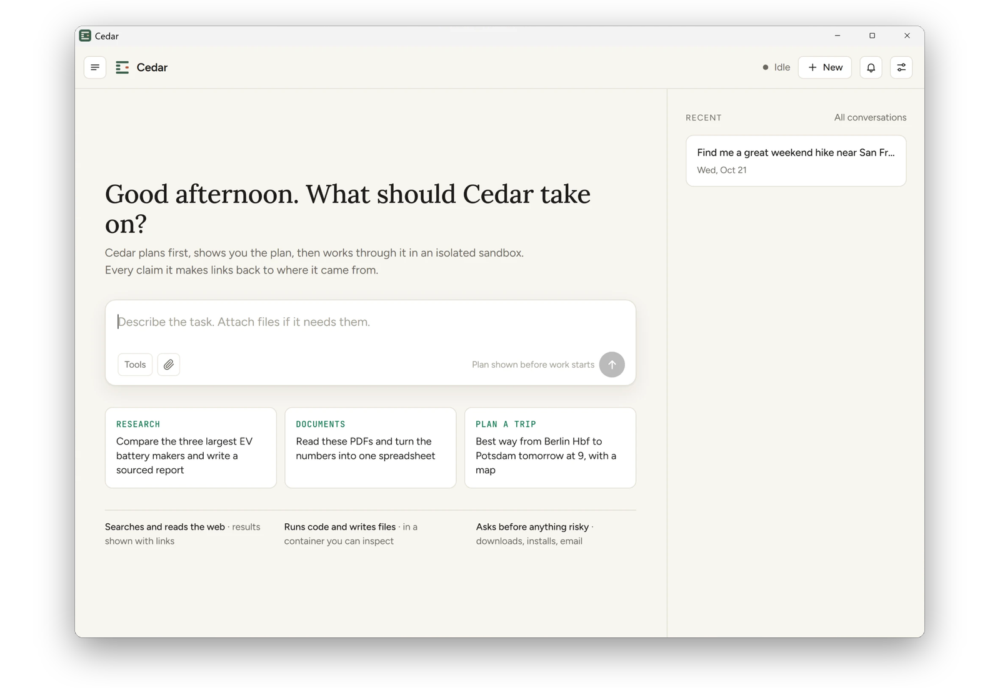
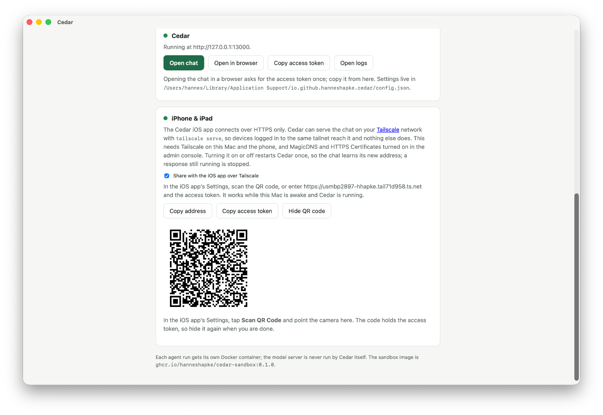
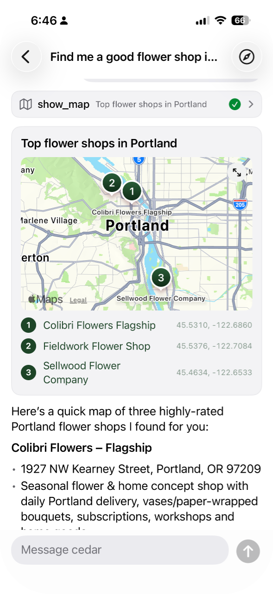

Give Cedar a task: research, documents, trips, your finances. It plans the work, does it in a sealed box, and shows you where every answer came from. Nothing leaves your computer unless you say so.
Mac app for Apple silicon · Windows app for x64 · Linux for x64 and arm64 · iPhone and Android · Apache 2.0 · built in the open on GitHubFrom the first start to a finished report: adding a model, a task with its plan, the work in a sealed box, and an agent made from the conversation.
Cedar searches the web, reads your files, runs the numbers and writes the result: a report, a spreadsheet, a map, a chart. For bigger tasks you see the plan before the work starts, and the sources when it's done.
Turn any conversation into an agent that runs every morning at 7, or when something happens: a price drops, an email arrives, a meeting is about to start. It tells your desktop or phone when it's done.

When there's no tool for a job, show Cedar how: record your screen while you do it once, and it writes down the steps and follows them next time. For what only exists behind windows, it works a desktop with the mouse and keyboard: one in a container, or your own, where it asks before it acts.
For something you want neither remembered nor kept. A private chat is in no list, search or inbox. Cedar brings nothing from memory into it and saves nothing from it, and it is deleted with its files when you leave it. On the web and in the phone apps.
Whatever the model runs, it runs in a container of the conversation's own, with no network unless you allow one. On Linux and macOS you can turn on NVIDIA OpenShell, which checks every connection: which program wants to reach which host. What it refuses, Cedar reports and asks you about.
Weather, maps, recipes, directions and transit, stocks, shopping, your email and calendar. Turn on what you want Cedar to reach. Everything else stays off.

Most assistants run in someone else's cloud. Cedar runs at home, and treats every task like a stranger in the house.
The model, your conversations and your files live on your machine. No account needed, nothing to subscribe to.
Every conversation gets its own workspace that can't see your documents, your photos or the internet unless you allow it. Between messages it sleeps; delete the chat and the box is gone.
Sending an email, downloading a file, deleting something: Cedar stops and asks. You approve once, or always, or never.
Cedar isn't tied to one AI company. Run a model on your Mac or PC with Ollama or LM Studio, serve one from a Linux GPU box with vLLM, or point it at a server you trust. Switch between them per conversation.
No model server yet? On your Mac or PC with a capable GPU, Cedar downloads a model and runs it for you with llama.cpp.
Need something specific? Add a tool from the community with one click, after seeing exactly what it asks for. The first one reads an insulin pump and compares your day with your week.
Browse community tools →
Pick the computer that does the work: a Mac, a Windows PC or a Linux box at home. Whichever it is, Cedar for iPhone or Android pairs with it and keeps up: the same conversations, maps and charts, a question when it needs one, and a notification when a task finishes while you're out.


Not code-signed yet, so Windows warns the first time: choose More info, then Run anyway.Got a GPU box or a home server, like an NVIDIA DGX Spark? Download Cedar's two programs, run them next to vLLM, and open the chat in your browser or on your phone. Same sealed boxes, same guardrails.
uname -m in a terminal: x86_64 means x64, aarch64 means arm64.
{{ linuxFile }}
scripts/cedar-stack.sh builds from source and starts it all.
{{ linuxCmdComment }} V={{ ver }} F=Cedar-$V-linux-{{ linuxArch }} {{ linuxCmdPicked }} U=https://github.com/hanneshapke/cedar/releases/download curl -fLO $U/v$V/$F.tar.gz tar -xzf $F.tar.gz sudo install $F/cedar* /usr/local/bin/ # then run them under systemd: see the Linux guide
Paired with one scan, whatever Cedar runs on. The phone reaches it over a private connection (Tailscale); nobody else can.


No invite, and no email address to share: install Cedar yourself with SideStore, a free, open source app store that signs it on your iPhone with your own Apple ID. A free Apple ID is enough.
{{ sourceUrl }}Rather install the file yourself? Download the .ipa on the iPhone and open it with SideStore (My Apps → +). The app is the same as on TestFlight except for push notifications, which an app signed with your own Apple ID can't have. With a free Apple ID, SideStore refreshes it every 7 days.
Step-by-step install guide →Seven ways to have an agent do tasks for you. OpenClaw lives in your chat apps and acts on your computer. OpenBot runs a team of agents such as Codex and Claude Code on your computer. Meta Muse runs in Meta’s cloud. OpenAI Dots is an always-on agent on its own computer in OpenAI’s cloud. Claude Duet is Anthropic’s, a proactive agent on its own computer in Anthropic’s cloud. Self-hosted Claude Managed Agents is Anthropic’s agent platform for companies, run on their own servers while the model stays with Anthropic or a cloud provider. Cedar runs at home, on a Mac, a Windows PC or a Linux box, and keeps every task in its own sealed box.
Pick Cedar when the assistant should never touch the rest of your computer and your data should stay home. {{ cmpOther.pickLead }} {{ cmpOther.pick }}
OpenClaw details from its README, October 2026. OpenBot details from its website and README, November 2026. Meta Muse details from Meta’s launch announcement and press coverage, September 2026. OpenAI Dots details from OpenAI’s announcement and press coverage, November 2026. Claude Duet details from Anthropic’s product page, October 2026. Self-hosted Claude Managed Agents details from Anthropic’s documentation, November 2026. Corrections welcome.Download Cedar and open it. Its setup window installs Docker for the sealed box Cedar works in, and gets you a model. Nothing to prepare first. On Linux it is a few commands, and the install guide has them for your computer.
Cedar already runs on another computer of yours? Connect this one to it: it needs no Docker and no model of its own.
With a capable graphics card or an Apple silicon Mac, Cedar downloads llama.cpp and a model that fits, and runs them. Nothing to install first, and nothing leaves your computer.
No big computer? Choose Baseten, Nebius, Doubleword or another provider in the setup window and paste an API key. They run the model, and you pay for what you use.
Already run Ollama, LM Studio, llama.cpp or vLLM? Click its preset in the setup window. The install guide suggests a model for your hardware.